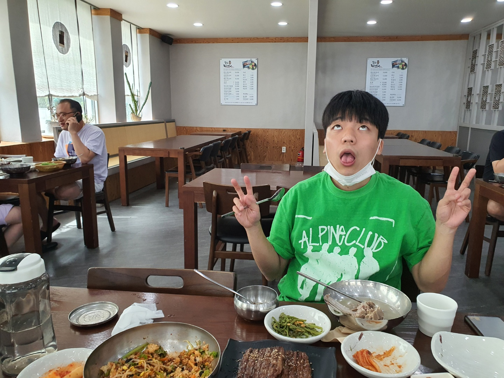
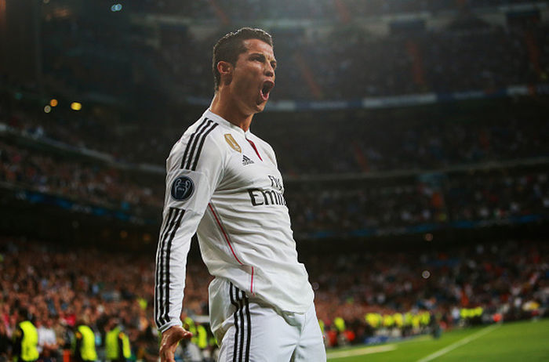
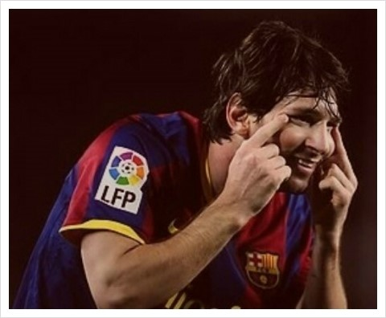

농협최고 아웃풋 김주철
- 연예인
- 축구선수
- 친구
호날두

GOAT
포르투갈 국적의 알 나스르 FC 소속 축구선수. 포지션은 공격수. 현재 포르투갈 축구 국가대표팀의 주장을 맡고 있다.
축구 역사상 최다 득점자이자 FIFA 주관 A매치 역대 최다 득점자며, 포르투갈 축구 국가대표팀의 역대 최다 득점자다.
또한 UEFA 올해의 선수 최다 수상자이자 동시에 UEFA 챔피언스 리그, UEFA 유로, 레알 마드리드 CF의 역대 최다 득점자다.
거기다가 UEFA 유로 우승, UEFA 네이션스 리그 우승, UCL 우승, 3개 리그 우승[23], 3개 리그 MVP 수상, 발롱도르 수상, FIFA 올해의 선수 수상, UEFA 올해의 선수 수상을 모두 이뤄낸 역사상 유일한 축구 선수다.
메시
개메좆
아르헨티나 국적의 파리 생제르맹 FC 소속 축구선수. 포지션은 공격수이며 현재 아르헨티나 축구 국가대표팀의 주장이다.
축구 역사상 최다 공격 포인트[16] 기록자이며, 발롱도르, FIFA 올해의 선수, 유러피언 골든슈 최다 수상자[17]이자 FC 바르셀로나, 아르헨티나 축구 국가대표팀, 라리가 역대 최다 득점자이다.
또한 월드컵 우승, 월드컵 골든볼 수상, 대륙컵 우승[18], 대륙컵 MVP 수상, UCL 우승, 리그 우승[19], 리그 MVP 수상[20], 트레블, 발롱도르 수상, FIFA 올해의 선수 수상, UEFA 올해의 선수 수상을 모두 이뤄낸 역사상 유일한 축구 선수이다.